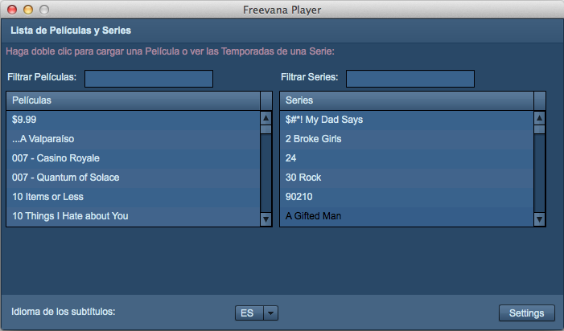

Freevana v1.2.5
Freevana Player funciona incluso cuando el sitio web de Cuevana no funciona.
El actualizador (opcional) de base de datos permite mantener una copia al día de la base de datos de Cuevana, y de los subtítulos.
100% Open Source


Instrucciones
- Instalar Freevana Player y bajar la base de datos.
- Aunque no es 100% necesario, es recomendable bajar una copia de los subtitulos para que todo funcione incluso cuando no anda la página de subtitulos.
- Descomprima la base de datos y los subtítulos.
- Ejecute Freevana Player, seleccione la base de datos y la carpeta de subtítulos. Listo!
Instalar v1.1
Se puede instalar Freevana Player directo desde el navegador:
O, se puede descargar el archivo .air y ejecutarlo con Adobe AIR:
Freevana Player (v1.2.5) 1.4MB (Windows, Linux, Mac)
Adobe AIR
Base de Datos (2011/12/11)
Freevana Database 837k (2011/12/11)
Subtítulos
Para una mejor experiencia, es recomendable tener una copia local de los subtítulos. De no ser así, Freevana Player intentará descargarlos cada vez que se reproduzca una nueva Película o Serie, sin embargo, tener una copia local es la opción más segura.
Español solo 293MBInglés solo 46MBPortugués solo 2.0MB Todos los idiomas 338MB
Changelog
Opcional
Freevana Database Updater
For advanced users only / Solo para usuarios avanzados
(Python [mechanize, BeautifulSoup])
zip |
tar
Contacto
tirino (tirino.wok@gmail.com)
Twitter @freevana
You can also clone these projects with Git by running:
$ git clone git://github.com/tirino/freevana-player
$ git clone git://github.com/tirino/freevana